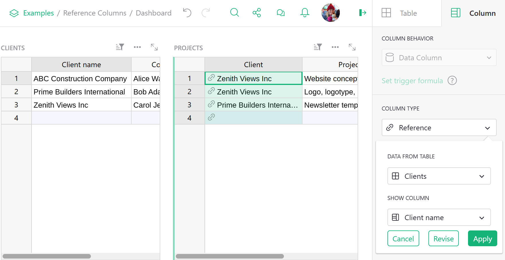

Warning
La traduction proposée ici a été générée automatiquement par le modèle d’intelligence artificielle GPT-4o. Il est probable qu’elle contienne des imperfections.
Mais la bonne nouvelle est que vous pouvez rejoindre la communauté de traduction pour améliorer le contenu fourni ici 👋.
Référence et Listes de Références#
Vue d’ensemble#
Dans la plupart des ensembles de données, chaque enregistrement partage une relation avec un autre type de données. Les bases de données relationnelles comme Grist sont construites sur ces relations. Des numéros d’identification sont assignés aux personnes, les employés sont organisés en départements, les reçus listent différents produits, etc.
Ces relations se présentent sous quatre formes différentes :
- Un-à-Un : Une relation exclusive entre deux enregistrements uniques, comme un individu et son acte de naissance, ou une entreprise et son document d’incorporation. Chaque enregistrement ne peut avoir qu’un seul correspondant, et vice versa.
- Un-à-Plusieurs : Une relation dans laquelle un enregistrement peut être lié à n’importe quel nombre d’enregistrements correspondants, comme un département et ses employés, ou une personne avec plusieurs adresses e-mail. Le premier enregistrement peut être lié à plusieurs autres enregistrements, mais chacun de ces enregistrements ne peut être lié qu’au premier.
- Plusieurs-à-Un : Une relation qui est l’inverse d’une relation Un-à-Plusieurs. Considérez les exemples précédents, mais inversés : les employés et le département auquel ils sont assignés, ou plusieurs adresses e-mail et la personne à laquelle elles appartiennent.
- Plusieurs-à-Plusieurs : Une relation dans laquelle n’importe quel nombre d’enregistrements peut être lié à n’importe quel nombre d’enregistrements correspondants, comme une liste d’étudiants et les différents cours auxquels ils sont inscrits. Ces relations sont les moins restrictives et peuvent exprimer les relations les plus complexes.

Les colonnes Référence et Liste de Références dans Grist permettent à une table de créer une référence explicite à une autre. Dans le monde des bases de données, cela est similaire à une clé étrangère. Dans le monde des tableurs, cela est similaire à un VLOOKUP, mais beaucoup plus puissant et plus facile à utiliser.
Dans ce guide, nous utiliserons le terme table sous-jacente pour la table qui liste toutes les valeurs disponibles, et table de référence pour la table qui utilise ces valeurs.
Créer une nouvelle colonne de Référence#
Supposons que nous ayons un document avec deux tables, Clients et Projets. La table Clients liste nos clients - noms, contacts, dates de signature - et la table Projets liste les projets que nous réalisons pour les clients.

Il y a toutes sortes de choses que Grist peut faire pour nous si nous lui indiquons que la colonne Client dans la table Projets fait référence aux clients listés dans la table Clients. Nous pouvons le faire en convertissant la colonne Client en une “colonne de référence”. Ouvrez le panneau de création sur le côté droit de la page (voir Spécifier un type) et définissez le “Type de Colonne” sur “Référence”. Ajustez l’option “Données de la Table” pour être la table correcte que vous souhaitez croiser, et l’option “Afficher la Colonne” pour correspondre à la colonne de cette table que vous souhaitez afficher. Ensuite, cliquez sur “Appliquer” lorsque vous êtes satisfait du résultat.

Comprendre la référence
La valeur de la colonne fait toujours référence à l’ensemble du record dans la table sous-jacente. La valeur affichée peut être n’importe quelle colonne de ce record, comme sélectionné dans Afficher la Colonne. Vous pouvez également inclure des colonnes supplémentaires à afficher comme expliqué plus tard.
Dans notre exemple, vous pouvez voir des petites icônes de lien apparaître dans les cellules de la colonne Client, montrant qu’elles ont été correctement croisées avec la table Clients. Une fois le type de colonne défini, vous pouvez commencer à taper dedans ou double-cliquer pour voir une liste déroulante de toutes les valeurs disponibles.

Notez que la table Clients et la colonne Client sont liées par le type de colonne plutôt que par le nom. Elles peuvent être nommées comme vous le souhaitez.
Repérer les colonnes de référence
Vous pouvez dire que les valeurs dans une colonne représentent une référence par l’icône de lien qui apparaît à côté des valeurs.
Si vous tapez accidentellement une valeur qui n’est pas présente dans la table Clients, sa valeur sera mise en évidence comme invalide :

Ajouter des valeurs à une colonne de Référence#
Parfois, il est utile d’ajouter une nouvelle valeur à la liste déroulante sans avoir à passer à la table sous-jacente. Les colonnes de référence rendent cela facile ! Il suffit de taper la valeur que vous souhaitez ajouter et de sélectionner la valeur + dans la liste déroulante. Grist ajoutera automatiquement un nouveau record contenant cette valeur à la table sous-jacente et insérera la référence appropriée :

Références bidirectionnelles#
Par défaut, les nouvelles colonnes de référence sont ajoutées à une table en tant que références unidirectionnelles. Cela signifie qu’elles n’existent que comme une seule colonne dans cette table spécifique. Grist vous permet également de configurer une colonne de référence avec des références bidirectionnelles. Cela crée une nouvelle colonne dans la table référencée (ou cible), ce qui signifie que les références entre les deux seront affichées dans les deux tables et resteront synchronisées.
Par exemple, nous pouvons faire de la colonne de référence existante, Client, une référence bidirectionnelle. Sous l’onglet ‘Colonne’ du Panneau de Création, sélectionnez ‘Ajouter une référence bidirectionnelle’.

Cela crée une nouvelle colonne de référence dans la table référencée, Clients. Comme il peut y avoir plusieurs projets pour un seul client, la colonne Projets créée automatiquement est une Liste de Références. Lorsqu’elle fait partie d’une référence bidirectionnelle, les mises à jour effectuées dans une colonne seront reflétées dans l’autre.

Les références bidirectionnelles respecteront si une colonne est une Référence ou une Liste de Références. Par exemple, la colonne Client dans la table Projets est une colonne de Référence, ce qui signifie qu’un seul Client peut être assigné à chaque projet.
Le Projet “Newsletter template” est déjà assigné au Client “Prime Builders International”. Que se passe-t-il si nous essayons d’assigner ce projet à “ABC Construction Company” ?

Une fenêtre contextuelle apparaîtra qui nous indique que l’enregistrement est déjà assigné. Si nécessaire, vous pouvez réassigner l’enregistrement au nouveau Client en cochant la case.

Pour supprimer une référence bidirectionnelle, sélectionnez la colonne de référence que vous souhaitez conserver. Ensuite, dans le Panneau de Création, cliquez sur l’icône de poubelle à côté de ‘Référence Bidirectionnelle’. Cela supprimera la colonne de référence dans la table cible. Par exemple, lorsque la colonne Client dans la table Projets est sélectionnée, cliquer sur l’icône de poubelle supprimera la colonne Projets dans la table cible, Clients.

Alternativement, vous pouvez supprimer une référence bidirectionnelle en sélectionnant la colonne puis en sélectionnant ‘Supprimer la colonne’ depuis le menu de la colonne ou en utilisant le raccourci clavier Alt + Moins.
Veuillez noter que les références bidirectionnelles ne peuvent pas être utilisées sur les colonnes Formule.
Convertir une colonne de Texte en Référence#
Lorsque vous travaillez avec des données existantes, il est courant d’avoir des valeurs textuelles existantes qui devraient vraiment être des valeurs de référence. Ne vous inquiétez pas, la conversion est simple ! Il suffit de changer le type de colonne en Référence et Grist trouvera et substituera automatiquement les valeurs correspondantes par des références. Si certaines valeurs ne sont pas trouvées, elles seront affichées comme invalides. Vous pouvez alors soit les ajouter à la table sous-jacente, soit sélectionner les valeurs appropriées pour elles.
Dans cet exemple, les trois premières valeurs correspondent parfaitement, mais Forest Labs est invalide car il n’existe pas dans la table Clients :

Inclure plusieurs champs d’une référence#
Un grand avantage des colonnes de référence est qu’elles vous permettent d’intégrer facilement plusieurs colonnes de la table sous-jacente. Dans notre exemple, nous voulons intégrer $Client.Contact à la table Projets. Il y a deux façons de faire cela.
- Cliquez sur l’icône
+à l’extrême droite de la table comme si vous ajoutiez une nouvelle colonne. Sous ‘Lookups’, survolez la table à partir de laquelle vous souhaitez extraire des données. Dans notre exemple, nous voulons extraire des données de la table Clients. Cela développe le menu pour afficher toutes les colonnes de cette table. Sélectionnez la colonne à partir de laquelle vous souhaitez extraire des données. Dans notre exemple, nous voulons intégrer des données de la colonne Contact. - Vous pouvez cliquer dans la colonne de référence, Client, pour la sélectionner. Ensuite, dans l’onglet Colonne du Panneau de Création, cliquez sur le texte vert ‘Ajouter une colonne’ sous la section ‘Ajouter des Colonnes Référencées’. Sélectionnez la colonne Contact dans la liste et elle sera automatiquement ajoutée à la table Projets :
Si vous êtes à l’aise avec les formules, vous pouvez voir que la colonne ajoutée est simplement la formule =$Client.Contact. Si vous le souhaitez, vous pouvez obtenir le même résultat en ajoutant manuellement la colonne de formule. Vous pouvez également utiliser n’importe quels autres champs de la table Clients en référençant $Client dans les formules de la table Projets.
Notez que dans les formules, nous utilisons le nom de la colonne de référence ($Client) pour faire référence à un enregistrement lié, et non le nom de la table (qui est Clients ici). Ne laissez pas la similarité des noms dans cet exemple vous confondre.

Utiliser des références dans les formules
Vous avez peut-être remarqué que la table sous-jacente est Clients (pluriel) mais que la formule est $Client.Contact (singulier). C’est parce que la formule se réfère à la colonne de référence, pas à la table sous-jacente. Dans notre exemple, la colonne de référence est Client.
Consultez notre article sur Références et Lookups pour voir plus de façons d’utiliser les références dans les formules.
Créer une nouvelle colonne de Liste de Références#
Jusqu’à présent, notre exemple ne traitait que des projets ayant un seul client. Supposons que nous ayons également des projets avec plusieurs clients, et que nous souhaitions maintenir des références à tous depuis la colonne Client de la table Projets.
Nous pouvons indiquer à Grist que la colonne Client contient plusieurs références en changeant son type en “Liste de Références”. Ce type de colonne peut référencer plusieurs records, et peut également être considéré comme une sélection multiple.
Ouvrez le panneau de création (voir Spécifier un type) et définissez le “Type de Colonne” de Client sur “Liste de Références”. Grist convertira automatiquement toutes vos références existantes en listes de références. Une fois que vous êtes satisfait du résultat, cliquez simplement sur “Appliquer” et la colonne Client sera prête à accepter autant de clients que vos projets en ont besoin.

Modifier les valeurs dans une colonne de Liste de Références#
Pour apporter des modifications à une cellule de Liste de Références, double-cliquez simplement sur la cellule ou appuyez sur la touche Entrée après avoir sélectionné la cellule que vous souhaitez modifier. Vous pouvez également commencer à taper après avoir sélectionné une cellule si vous souhaitez écraser tout contenu existant. Cela ouvrira un éditeur comme celui de l’exemple ci-dessous.

Comme avec les colonnes de Référence, le menu de saisie semi-automatique se remplira de suggestions au fur et à mesure que vous tapez. Si vous tapez une valeur qui n’est pas présente dans la table référencée, vous pouvez sélectionner la valeur + pour ajouter une nouvelle ligne à la table référencée avec votre valeur.
Pour supprimer des références existantes, appuyez simplement sur la touche Retour arrière, ou déplacez votre curseur sur une référence et cliquez sur l’icône X.
Vous pouvez également réorganiser les références dans l’éditeur en les faisant glisser avec votre souris.
Pour enregistrer vos modifications et fermer l’éditeur, appuyez sur Entrée ou Tabulation, ou cliquez n’importe où en dehors de l’éditeur. Pour fermer l’éditeur et annuler toutes les modifications que vous avez apportées, appuyez sur Échap.
Comprendre les colonnes de référence#
Les cellules dans une colonne de référence identifient toujours un record entier dans la table référencée. Pour plus de commodité, vous pouvez sélectionner quelle colonne de ce record afficher en définissant “AFFICHER LA COLONNE”. Cependant, la valeur de la cellule est toujours l’ID unique d’un record. De même, les Listes de Références stockent une liste d’IDs de records. Qu’est-ce que cela signifie vraiment ?
Jetons un coup d’œil au modèle Inscription aux Cours.
Dans la table Classes, la colonne Instructeur est une colonne de référence qui fait référence aux données de la table Staff. Nom Complet est sélectionné sous ‘Afficher la Colonne’ et est utilisé comme étiquette pour représenter le record de la table Staff qui est référencé ici.

Nous pouvons changer cette étiquette pour n’importe quelle autre valeur contenue dans le record. Changeons-la en ‘ID de Ligne’.

L’ID de ligne est ce qui est réellement stocké dans la colonne de Référence ou de Liste de Références. Avec cet ID, nous pouvons récupérer toutes les données associées à ce record.

Dans la première ligne de la table Classes, nous voyons Staff[2] comme valeur dans la colonne Instructeur. Cela représente le record dans la table Staff avec l’ID de Ligne = 2.
Nous pouvons naviguer vers la table Staff et voir quel record est assigné à l’ID de Ligne = 2.
Pour voir l’ID unique d’un record, ajoutez une nouvelle colonne avec la formule = $id.

Nous pouvons voir que la valeur dans la colonne Nom Complet pour le record avec l’ID de Ligne =2 est Dowbakin, Daniella. Si nous revenons à nos paramètres d’origine pour la colonne Instructeur de la table Classes, où Nom Complet était sélectionné sous ‘Afficher la Colonne’, nous voyons que la valeur Nom Complet associée à Staff[2] est Dowbakin, Daniella.

Filtrer les choix de Référence dans la liste déroulante#
Lors de la saisie de données dans une colonne de référence, vous verrez une liste déroulante de toutes les valeurs disponibles à choisir. Parfois, la liste peut devenir longue et, dans certains cas, confuse.
Par exemple, disons que nous créons une base de données de stades et notons leurs emplacements en utilisant une liste déroulante pour sélectionner leurs villes respectives à partir d’une liste de villes du monde :

Une liste déroulante aussi longue est peu pratique. Au lieu de cela, il serait utile que la liste déroulante des villes soit filtrée pour n’afficher que les villes basées sur la colonne adjacente Pays du Stade.
Pour faire cela, nous travaillerons avec trois tables – Pays, Villes, et Stades. Vous pouvez voir cet exemple ici.

La table Pays liste chaque Pays comme un record unique. La table Villes crée une relation entre une ville et un pays. Chaque Ville est son propre record, assigné à son Pays correspondant dans la colonne de référence adjacente. La table Stades est liée aux deux tables via des colonnes de référence : Pays du Stade référence la table Pays, et Ville du Stade référence la table Villes.
Pour filtrer la liste déroulante d’une colonne de référence – ici, la colonne Ville du Stade – sélectionnez d’abord la colonne de référence, puis cliquez sur ‘Définir la condition de liste déroulante’ dans le Panneau de Création sous l’onglet ‘Colonne’.

En écrivant une condition sous forme de formule, vous pouvez filtrer les choix trouvés dans les listes déroulantes de la colonne. L’attribut choice fait référence aux choix dans la liste déroulante.

Ici, la formule est choice.Country == $Stadium_Country
choice.Country regarde la valeur dans la colonne Pays de la table Villes. Si elle correspond à la valeur dans la colonne Pays du Stade de la table Stades, alors ce record sera inclus dans les options de la liste déroulante.

Maintenant, au lieu d’afficher une liste de toutes les villes du monde, la liste déroulante dans la colonne Ville du Stade ne liste que les choix qui appartiennent au pays entré dans la colonne Pays du Stade, ce qui rend la sélection du choix approprié beaucoup plus rapide.
L’attribut choice peut également être utilisé lors de la définition des conditions de filtre de liste déroulante pour les colonnes choix et liste de choix.
Notez que parce que les conditions de filtrage des listes déroulantes de référence sont écrites sous forme de formules, ces conditions peuvent être très flexibles et granulaires. Les utilisateurs expérimentés avec les règles d’accès peuvent remarquer des similitudes dans la façon de penser à l’écriture de ces formules.